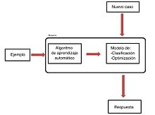

Aprendizaje Automatico
El aprendizaje automático o aprendizaje automatizado o aprendizaje de
máquinas (del inglés, machine learning) es el subcampo de las ciencias de
la computación y una rama de la inteligencia artificial, cuyo objetivo es
desarrollar técnicas que permitan que las computadoras aprendan. Se dice
que un agente aprende cuando su desempeño mejora con la experiencia; es
decir, cuando la habilidad no estaba presente en su genotipo o rasgos de
nacimiento. De forma más concreta, los investigadores del aprendizaje de
máquinas buscan algoritmos y heurísticas para convertir
muestras de datos en programas de computadora, sin tener que escribir los
últimos explícitamente. Los modelos o programas resultantes deben ser
capaces de generalizar comportamientos e inferencias para un conjunto más
amplio (potencialmente infinito) de datos.
En muchas ocasiones el campo de actuación del aprendizaje automático se
solapa con el de la estadística inferencial, ya que las dos disciplinas se
basan en el análisis de datos. Sin embargo, el aprendizaje automático
incorpora las preocupaciones de la complejidad computacional de los
problemas. Muchos problemas son de clase NP-hard, por lo que gran parte de
la investigación realizada en aprendizaje automático está enfocada al
diseño de soluciones factibles a esos problemas. El aprendizaje automático
también está estrechamente relacionado con el reconocimiento de patrones.
El Aprendizaje automático puede ser visto como un intento de
automatizar algunas partes del método científico mediante métodos
matemáticos. Por lo tanto es un proceso de inducción del conocimiento.
Contenido
Resumen
Algunos sistemas de aprendizaje automático intentan eliminar toda
necesidad de intuición o conocimiento experto de los procesos de
análisis de datos, mientras otros tratan de establecer un marco de
colaboración entre el experto y la computadora. De todas formas, la
intuición humana no puede ser reemplazada en su totalidad, ya que el
diseñador del sistema ha de especificar la forma de representación de
los datos y los métodos de manipulación y caracterización de los mismos.
Sin embargo, las computadoras son utilizadas por todo el mundo con fines
tecnológicos muy buenos.

Tipos
Los diferentes algoritmos de Aprendizaje Automático se agrupan en una
taxonomía en función de la salida de los mismos. Algunos tipos de
algoritmos son:
Aprendizaje supervisado
El algoritmo produce una función que establece una correspondencia entre
las entradas y las salidas deseadas del sistema. Un ejemplo de este tipo
de algoritmo es el problema de clasificación, donde el sistema de
aprendizaje trata de etiquetar (clasificar) una serie de vectores
utilizando una entre varias categorías (clases). La base de conocimiento
del sistema está formada por ejemplos de etiquetados anteriores. Este
tipo de aprendizaje puede llegar a ser muy útil en problemas de
investigación biológica, biología computacional y bioinformática.
Conocimiento

En el aprendizaje automático podemos obtener 3 tipos de conocimiento,
que son:
-
Crecimiento
Es el que se adquiere de lo que nos rodea, el cual guarda la
información en la memoria como si dejara huellas.
-
Reestructuracion
Al interpretar los conocimientos el individuo razona y genera nuevo
conocimiento al cual se le llama de reestructuración.
-
Ajuste
Es el que se obtiene al generalizar varios conceptos o generando los
propios.